Apuntes para la oposición al Cuerpo de Diplomados Comerciales del Estado
7 Análisis de mercados (I). El modelo de competencia perfecta. Análisis de equilibrio parcial: corto y largo plazo, dinámicas de ajuste y estabilidad del equilibrio. Análisis de eficiencia y bienestar.
7.1 Introducción  1'
1'
En las últimas dos décadas, la concentración empresarial ha aumentado significativamente, con mercados dominados por grandes empresas, llamadas "superestrellas". La globalización y la digitalización han impulsado este fenómeno, con empresas como Amazon y Google aprovechando las economías de escala y los efectos de red1. Así, estos factores crean altas barreras de entrada y pueden conducir a mercados donde el ganador se lleva todo.
Esto genera un debate entre economistas sobre si la competencia ha disminuido: mientras algunos argumentan que la menor competencia reduce la innovación, otros sostienen que la concentración es el resultado de una intensa competencia que culmina con unas pocas empresas en la cima.
En el marco de la Teoría Económica, a la hora de analizar las imperfecciones de mercado se toma como punto de referencia el modelo de competencia perfecta en un contexto de equilibrio parcial (ceteris paribus)2.
El modelo lo desarrolla Marshall (1890) a finales del siglo XIX y es de gran importancia tanto desde el punto de vista práctico, ya que se aproxima a la realidad de algunos mercados –como el de las materias primas y los de valores–, y el teórico, ya que es el modelo de referencia para comparar con otras estructuras, siendo clave para las autoridades de la competencia.
Por consiguiente, el objetivo de esta exposición será el análisis de este modelo a través del siguiente esquema:
Caracterización del modelo de competencia perfecta
Equilibrio de la empresa y de la industria.
Equilibrio competitivo.
Estática comparativa.
Relajación de supuestos.
7.2 Caracterización del modelo de competencia perfecta 2'
Los supuestos normalmente asociados a la competencia perfecta en el mercado de bienes son:
Muchos compradores y muchos vendedores, es decir, atomizado (o pequeño tamaño de la empresa en relación al mercado), lo que implica que todos actúan como precio-aceptantes.
Producto homogéneo, por lo que el único factor relevante para la elección por parte de los consumidores será el precio.
Información perfecta3, es decir, todos los agentes que participan en el mercado disponen de toda la información relevante.
Todas las empresas tienen la misma tecnología a largo plazo, igualdad de acceso a factores productivos, y libertad de entrada y de salida4.
Rendimientos mixtos, lo que genera una curva de costes medios en forma de U.
Perfecta divisibilidad de bienes y de factores productivos, lo que implica que las funciones de producción y de costes son continuas.
Perfecta movilidad de factores productivos, cuyo mercado también se encuentra en competencia perfecta.
Costes constantes, es decir, que el precio de los factores productivos se mantiene constante para cualquier nivel de demanda de factor5.
Ausencia de externalidades, de bienes públicos y de intervención del sector público (no hay fallos de mercado)
Empresas racionales. Buscan la maximización de beneficios.
Se trata de supuestos bastante restrictivos; al final de la exposición levantaremos los supuestos de rendimientos mixtos, y el de precio constante de los factores productivos.
Equilibrio de competencia perfecta
Así, bajo estos supuestos el equilibrio de competencia perfecta se define como una situación en la que existe un precio de un bien y un nivel de producción tal que los mercados se vacían –Cantidad demandada = Cantidad ofertada–, los consumidores maximizan su utilidad y los productores su beneficio dada una tecnología y precio de los factores de producción.
El papel de los precios
A su vez, el precio cumple un papel fundamental en el mercado
Transmitiendo toda la información relevante
Mostrando el valor marginal del bien
Racionando, es decir, son indicadores de escasez.
Oferta de las empresas y de la industria
Para determinar el equilibrio será preciso determinar la oferta de las empresas individuales y, a partir de ellas, la de la industria. La industria se define como la agregación de todas las empresas que elaboran el mismo bien y la suma de las ofertas de todas las empresas constituyen la oferta de la industria \[S=\sum\limits_{i=1}^{n}s_{i} \tag{7.1}\]
7.3 Equilibrio de la empresa y de la industria  9'
9'
Con todo lo anterior se puede estudiar el equilibrio de la industria y de la empresa en diferentes horizontes temporales. Pero antes describiremos brevemente la economía y la forma de obtener la demanda
Descripción de la economía
Consideramos una economía formada por un conjunto de consumidores (\(I\)), de empresas (\(J\)) y de mercancías (\(L\)).
Las preferencias del consumidor \(i\) sobre las cestas de consumo \(x_{i}=\left(x_{1i},\ldots,x_{Li}\right)\) pueden ser representadas por una función de utilidad de buen comportamiento.
Los agentes disponen inicialmente de una dotación \(w_{mi}\) del bien numerario6 que las empresas podrán tomar y transformar en otros bienes.
Cada empresa \(j\) dispone de un conjunto de posibilidades de producción \(Y_{j}\in\mathbb{R}^{LJ}\). Donde cada elemento de \(Y_{j}\) es un vector de producción \(y_{i}=\left(y_{1i},\ldots,y_{Li}\right)\in\mathbb{R}^{L}\), donde los elementos con signo negativo representan inputs y los elementos con signo positivo representan el output. Un plan de producción es factible si puede obtenerse transformando las dotaciones iniciales a través del uso de la tecnología.
El precio del bien numerario queda normalizado a 1. El precio del bien de mercado analizado es \(p\).
Obtención de la curva demanda
El consumidor tiene unas preferencias sobre el bien l y el numerario representables por una función de utilidad cuasilineal respecto del dinero (FU de Marshall cuasilineal). Esta función presenta ER y ES cruzados nulos.
El consumidor maximiza su utilidad sujeto a una restricción presupuestaria. En el punto óptimo la restricción de la renta se satura y la \(UMg\) del consumo de un bien se iguala al \(CMg\) de adquirirlo (su precio) multiplicado por el multiplicador de Lagrange, que representa la \(UMg\) de la renta. Esto es, se cumple la segunda Ley de Gossen.
A partir de la CPO obtenemos la cantidad óptima de \(x_{i}\) a consumir. Esta puede ser expresada en función de los parámetros de los que depende (en este caso solo de su propio precio), obteniendo la demanda marshalliana del bien \(x_{i}(p_{i})\), que es decreciente y positiva. Esta demanda será independiente de \(w_{mi}\) debido al carácter cuasilineal de las preferencias.
Curva de demanda agregada
Debido al carácter cuasi-lineal de las preferencias será posible obtener una función de demanda agregada \[x\left(p\right)=\sum_{i}x_{i}\left(p\right) \tag{7.2}\] a través de la suma horizontal de las diferentes curvas de demanda individuales, debido a la inexistencia de efectos renta. Por tanto, mantendrá las propiedades de las funciones individuales. Esta función de demanda agregada será continua y no creciente para todo \(p>0\).
Función inversa de la demanda de mercado
La función inversa de la demanda de mercado se obtiene despejando el precio en la función de demanda agregada, \(x\left(p\right)\): en lugar de indicar qué cantidad se demanda a cada precio, indica qué precio corresponde a cada cantidad. Se escribe así: \[P(x)=x^{-1}(x) \tag{7.3}\] donde el exponente \(-1\) no es una potencia, sino que denota la función inversa de la demanda \(x\left(p\right)\), y la \(x\) entre paréntesis es una cantidad concreta del bien. Su interpretación económica es interesante: nos dice el precio resultante de una demanda agregada de \(x\). Es decir, a este precio los consumidores demandan una cantidad del bien \(l\) tal que la demanda agregada es \(x\). Es especialmente relevante que, a nivel individual, el beneficio marginal en términos del numerario se iguala al precio, por lo que el valor de esta función puede ser interpretado como el beneficio marginal social del bien \(l\)7.
A continuación, pasamos a analizar el equilibrio dependiendo del horizonte temporal. La curva de oferta la derivaremos conforme vayamos resolviendo el problema del productor. La diferencia entre el análisis a cp y a lp está en la capacidad de las empresas de decidir sobre la utilización de todos los ffpp. Los mayores grados de libertad que permite el lp provocan que la curva de costes a lp sea siempre inferior o igual a la de cp.
Equilibrio a muy corto plazo
En el muy corto plazo o “periodo de mercado”:
La dotación de factores es fija, por lo que la producción está dada, es decir, la oferta es totalmente inelástica.
No existe libertad de entrada ni salida, por lo que el número de empresas es fijo.
En esta situación, el precio no es más que un mecanismo para racionar la demanda, ya que distribuye la cantidad producida entre los consumidores. En consecuencia, la demanda determina por sí sola el precio, y la oferta, la cantidad de equilibrio de mercado.
Análisis gráfico
Gráficamente, en dos planos de precios y cantidad como el de la Figura 7.1 se representa la curva de demanda y oferta de la industria y la empresa:
En el caso de la industria, la demanda tiene pendiente negativa porque la cantidad demandada aumenta conforme disminuye el precio mientras que la oferta se obtiene mediante la agregación horizontal de las ofertas individuales8.
Para la empresa individual, considera la demanda a la que se enfrenta como una línea horizontal pues es precio-aceptante –forma que puede vender toda la cantidad que desee al precio de mercado y nada a un precio superior9– y la oferta es fija por ser la dotación de todos los factores fija.
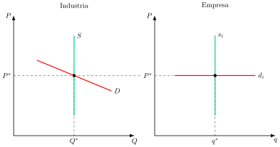
Ejemplos de estos mercados lonja de pescado, energía solar, mercado de fruta o productos agrícolas en los que lo único que puede pasar es que baje el precio si baja la demanda.
Equilibrio a corto plazo
El corto plazo es el horizonte temporal en el que:
La dotación de algún factor productivo es fija, pero las dotaciones del resto son variables. La cantidad producida ya no es fija –puede variar aumentando o disminuyendo el empleo de factores variables– y se distinguirán entre costes fijos y variables
No existe libertad de entrada y de salida, por lo que el número de empresas es fijo y pueden convivir empresas con beneficios y pérdidas.
El objetivo de la empresa es el de maximizar beneficios, es decir, la diferencia entre ingresos –valor de mercado de la cantidad vendida– y costes totales –suma de costes fijos y variables–: \[\max\quad\pi=P\cdot q-CT \tag{7.4}\] donde \(P(Q)\) es la curva de demanda de la empresa (constante por ser precio aceptante), que, como veremos en la condición de primer orden, es totalmente horizontal (es decir, elasticidad infinita). Es decir, en competencia perfecta, el precio es una variable exógena (mientras que en monopolio es una variable endógena).
Cuya CPO indica que el precio es igual al coste marginal.
\[\dfrac{\partial\mathcal{\pi}}{\partial q}=0\Rightarrow P=CMg=IMg \tag{7.5}\] de esta forma, si \(P>CMg\), la empresa puede aumentar su producción en 1 unidad y aumentar su beneficio en \(P\text{–} CMg\); si \(P<CMg\), la empresa puede disminuir su producción en 1 unidad y aumentar su beneficio en \(CMg\text{–} P\).
Su CSO impone que se maximizará beneficios en la parte creciente de la curva de costes marginales, \(CMg\). \[\dfrac{\partial^{2}\mathcal{\pi}}{\partial^{2}q}<0\Rightarrow\:\dfrac{\partial CMg}{\partial q}>0 \tag{7.6}\]
Así, a CSO impone que el \(CMg\) sea creciente (es decir, función de producción estrictamente cóncava –rendimientos decrecientes–). Esta condición no es baladí, porque si la producción presenta rendimientos mixtos, la CPO se puede dar en dos puntos: con \(CMg\) decreciente y con \(CMg\) creciente, como ahora veremos. La CSO debe cumplirse para que el beneficio obtenido sea un máximo y no un mínimo.
Análisis gráfico
Gráficamente, el equilibrio se puede analizar desde un enfoque de ingresos y costes totales y un enfoque marginal.
Ingresos y costes totales: en un plano de ingresos, \(I\),costes, \(C\), y cantidad producida por la empresa, \(q\), como el de la Figura 7.2:
Se representa la curva de ingresos totales, \(IT\), y la curva de costes totales, \(CT\), que es siempre creciente, primero a ritmo decreciente y después, por la ley de rendimientos marginales decrecientes, a ritmo creciente.
Como el objetivo del empresario es la maximización del beneficio, esto lo logrará en aquel punto de producción en el que la distancia entre los ingresos y los costes es máxima en \(A\), obteniendo beneficios extraordinarios.
En los puntos donde ingresos y costes totales se cortan, la empresa obtendría beneficios normales siendo los puntos que están fuera del intervalo entre ellos aquellos donde la empresa conseguiría pérdidas, siendo el punto \(D\) aquel donde sería máxima la pérdida.
Enfoque marginal: desde un enfoque marginal, en un plano adyacente de precios, \(P\), costes, \(C\), y cantidad producida por la empresa, \(q\), se trasladan los puntos obtenidos.:
A partir de la función de costes totales y teniendo en cuenta que el coste total medio, \(CTMe\), se deriva a partir del valor de la pendiente de los radio vectores a sus distintos puntos, se considerará el volumen de producción donde el coste total medio es mínimo, \(B\).
Además, si se considera sobre dicha función el valor marginal, que se estima por el valor de la pendiente de la tangente en sus diferentes puntos y aquel volumen de producción donde el coste marginal es mínimo, se trazará la curva de coste marginal, \(CMg\), que atravesará al coste total medio en su punto mínimo \(B\). A su vez, atravesará a la curva de costes medios variables –la cual se obtiene restando los costes fijos a los totales– en el punto \(C\).
Por otro lado, en el mercado competitivo al ser la empresa precio-aceptante, se enfrentará a una curva de precio, que es a su vez la demanda percibida por el empresario, \(d\), su curva de ingreso medio, \(IMe\), y marginal, \(IMg\). Esta será completamente horizontal, estando determinado su valor por la pendiente de la función de ingresos totales, \(IT\), de la empresa.
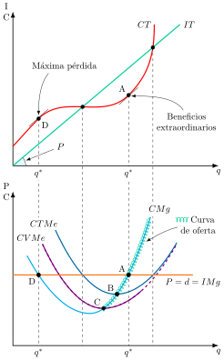
Umbrales de rentabilidad y cierre
A continuación, se comentarán una serie de puntos muy relevantes para el análisis:
En el punto A los beneficios son extraordinarios, dado que están por encima de los \(CTMe\).
En el punto B, mínimo del coste total medio, los beneficios son nulos, por lo que se le llama umbral de beneficios u óptimo de explotación. Por encima de ese precio la empresa obtiene beneficios extraordinarios.
En el tramo del coste marginal de B a C, la empresa tendrá beneficio negativo. No obstante, la empresa cubre el coste medio variable y parte de los costes fijos, por lo que seguirá produciendo cantidades positivas.
En el punto C, sin embargo, la empresa solo cubre los costes variables pero no los fijos siendo este el punto mínimo de explotación en el que la empresa es indiferente entre cerrar y producir.
En el punto D el precio también iguala al coste marginal, pero en su tramo decreciente, por lo que no se cumple la condición de segundo orden y la pérdida es máxima. La empresa nunca elegirá producir en ese punto.
Curva de oferta de la empresa
Así, la curva de oferta de la empresa a corto plazo se obtiene por estática comparativa a partir de los sucesivos puntos de intersección entre su curva de \(CMg\) y sus sucesivas curvas de demanda, horizontales al nivel de cada precio de mercado. Además, la curva de oferta coincide con el tramo creciente de la curva de costes marginales a partir del mínimo de explotación C. Para precios inferiores la empresa cierra y ofrece una cantidad nula.
Curva de oferta de la industria
Por otro lado, la curva de oferta de la industria a corto plazo es la suma horizontal de las curvas de oferta individuales, es decir, la suma de las cantidades que cada empresa desea vender a cada precio, siempre que el precio de los factores no varíe con la producción de la industria10.
Equilibrio
Para determinar el equilibrio se introducen en el análisis los consumidores que son iguales e idénticos por lo que la curva de demanda del mercado es la suma horizontal de las demandas individuales.
Gráficamente, en un plano de precios y cantidades como el de la Figura 7.3, el equilibrio en el corto plazo se produce en la intersección entre oferta y demanda, que será compatible con la existencia de beneficios o pérdidas a corto plazo. Además, el mercado se vacía y el precio transmite toda la información relevante sobre el bien.
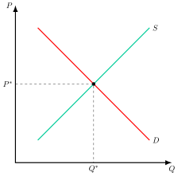
Conclusiones
En resumen:
En el corto plazo pueden convivir empresas que obtengan beneficios extraordinarios (beneficio económico superior a 0) o pérdidas.
En el equilibrio los consumidores maximizan su utilidad, las empresas maximizan beneficios y el mercado se vacía (esto es las decisiones de consumidores y empresas son compatibles). Consecuencia del equilibrio competitivo es que la restricción presupuestaria se cumple con igualdad11.
Las condiciones de viabilidad económica (es decir, las condiciones para que la empresa prefiera seguir produciendo a cerrar) en el corto plazo son:
\(IT\ge CV\),
\(P\ge \text{M{í}n}\,\,CVMe\).
Que, si pierde dinero, pierda menos que los costes fijos.
Equilibrio a largo plazo
Por otro lado, en el largo plazo:
La dotación de todos los factores es variable, es decir, la cantidad producida puede variar aumentando o disminuyendo el empleo de cualquier factor y no habrá distinción entre costes fijos y costes variables. La empresa podrá modificar el tamaño de planta.
Existe libertad de entrada y salida de empresas, lo que implica que el número de empresas ya no es fijo y que no obtendrán ni beneficios ni pérdidas, es decir, los beneficios económicos son nulos.
La dotación variable de todos los factores implica que la combinación de factores productivos elegidos es técnica y económicamente eficiente por parte de la empresa, lo que hará que operen en el tamaño óptimo de planta
Análisis gráfico
Gráficamente en un plano de precios y cantidades como el de la Figura 7.4:
Dada la dotación variable de todos los factores, la empresa operará con el tamaño óptimo de planta, es decir, en el mínimo de los costes medios a largo plazo, \(CMe_{lp}\), donde estos se igualan a los costes marginales a largo plazo, \(CMg_{lp}\), y ambos coinciden con sus respectivas curvas a corto plazo, todo ello al precio \(P^{*}\).
Respecto a la existencia de libre entrada y salida de empresas, en un plano adyacente de precios y producción se representa la demanda y la oferta de mercado con un equilibrio asociado, \(E_{0}\).
Si, por cualquier razón, se incrementa la demanda del mercado, \(D^{\prime}\), y aumenta el precio de equilibrio a \(P^{\prime}\), esto generará beneficios positivos en las empresas instaladas, pues el nuevo precio está por encima de los costes medios, para una producción \(Q_{1}\) y un equilibrio \(E_{1}\).
Pero como hay libertad de entrada, nuevas empresas entrarán en el mercado atraídas por dichos beneficios positivos, aumentando la producción agregada, lo que se refleja gráficamente con un desplazamiento a la derecha de la curva de oferta del mercado, \(S^{\prime}\), hasta que los beneficios se anulan, es decir, hasta que el precio coincida con el mínimo del coste medio y cada empresa vuelva a lanzar al mercado la cantidad óptima, en \(E_{2}\).
Por tanto, en el largo plazo todas las empresas operan en la dimensión óptima (\(P=CMg_{lp}=CMe_{lp}\)), y obtienen beneficios económicos nulos12.
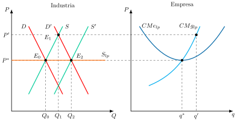
Curva de oferta a largo plazo
Nótese también que la curva de oferta a largo plazo del mercado es horizontal debido al supuesto de costes constantes, es decir, que cuando la industria demanda más factores productivos para aumentar su producción, el precio de los factores productivos permanece constante.
Al ser la curva de oferta del mercado a largo plazo totalmente horizontal, el precio viene determinado por la oferta –es decir, por la tecnología–, y el mantenimiento de este precio queda garantizado por la competencia. Por su parte, la cantidad producida y el número de empresas queda determinado por la demanda.
Las curvas de oferta y demanda se pueden desplazar por diferentes motivos (aquellas variaciones que no estén en los ejes, es decir, que no sean precio ni cantidad).
Conclusiones
En resumen, estas son las implicaciones de que las dotaciones de todos los factores productivos sean variables:
La combinación de factores productivos elegidos es técnica y económicamente eficiente.
La curva de \(CMg\) es más elástica que en el corto plazo13.
Acabamos de adelantar que en competencia perfecta la producción en el largo plazo es eficiente, por lo que pasamos a estudiar la optimalidad.
7.4 Equilibrio competitivo 2'
Los rasgos generales del equilibrio competitivo al producirse en el mínimo de los costes medios:
No hay excesos de capacidad.
Los beneficios económicos son cero.
Los consumidores adquieren el producto al mínimo precio posible.
La maximización de beneficios de las empresas es compatible con la maximización de la utilidad de los consumidores, por lo que los mercados se vacían.
Primer teorema del bienestar: en ausencia de fallos de mercado, la competencia perfecta conduce a una asignación que es óptima en el sentido de Pareto, esto es, que ningún agente puede mejorar sin empeorar a otro14.
A continuación mostraremos la eficiencia asignativa y productiva del equilibrio competitivo
Eficiencia asignativa
Hay eficiencia asignativa cuando se produce la cantidad de cada bien en la que el valor que los consumidores conceden a la última unidad coincide con lo que cuesta producirla15. Para demostrar que el equilibrio competitivo la alcanza, introducimos primero los conceptos del excedente del consumidor (EC) y el excedente del productor (EP).
EC: Diferencia entre lo que el consumidor estaría dispuesto a pagar por una unidad del bien, y lo que paga finalmente16.
EP: diferencia entre el precio al que el productor vende finalmente una unidad del bien y el precio mínimo al que estaría dispuesto a venderla, que en competencia perfecta es su coste marginal17.
Sumando ambos excedentes obtendríamos el excedente social (ES).
Gráficamente, en un plano de precios y cantidades como el de la Figura 7.5, representando las curvas de oferta y demanda, de cuya intersección se derivará el precio y la cantidad de equilibrio. Así:
EC: El consumidor estaría dispuesto a pagar por una unidad el precio correspondiente al cruce entre la curva de demanda y el eje de precios. No obstante pagará el correspondiente al equilibrio.
EP: El productor estaría dispuesto a producir una unidad por un importe cercano a 0 (para este caso). No obstante recibirá el precio correspondiente al equilibrio.
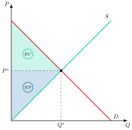
Eficiencia del equilibrio: Implicaciones de \(P=CMg\):
El valor que el consumidor concede a la última unidad del bien, medido por su disposición a pagar, se iguala al coste marginal de producirla.
El excedente social es máximo en competencia perfecta.
Además es óptimo de Pareto dado que no existe posibilidad de reasignar los recursos de tal forma que se mejore el bienestar de un agente social sin empeorar el de los demás (1TFB).
Eficiencia productiva
Hay eficiencia productiva cuando la cantidad total se obtiene al menor coste posible. En el largo plazo competitivo todas las empresas producen en el mínimo de su curva de \(CMe_{lp}\), que es el mismo para todas porque comparten la misma tecnología, de modo que ninguna otra forma de repartir la producción entre empresas reduciría el coste total.
Propiedades deseables del equilibrio competitivo
Por otro lado, las 3 propiedades deseables del equilibrio son: existencia, unicidad y estabilidad. A continuación, se ilustrarán estos tres conceptos con la función de exceso de demanda en un contexto de equilibrio parcial.
Existencia
Comenzando con la existencia, se refiere al concepto de equilibrio, es decir, a que la oferta y la demanda del mercado se corten en algún punto.
El equilibrio existe si hay algún precio al que la cantidad demandada y la ofrecida coinciden. Como las funciones de oferta y demanda son continuas para todo \(p>0\), basta con que haya un precio con exceso de oferta y otro con exceso de demanda para que se crucen en algún punto. Si además la demanda es estrictamente decreciente y la oferta estrictamente creciente, ese cruce es único.
Vamos a definir una función de exceso de demanda como \[Z\left(P\right)=D\left(P\right)-S\left(P\right) \tag{7.7}\] , de forma que si esta función es continua y toma un valor negativo para algún precio P’ y un valor positivo para algún precio P’’, entonces necesariamente existirá un equilibrio competitivo.
Unicidad
Se refiere a que el equilibrio sea único, es decir, a que las curvas de oferta y demanda se corten en un punto y en ninguno más.
Estabilidad
Se refiere a que el equilibrio sea estable, es decir, a que, ante una perturbación, se vuelva al mismo equilibrio a través de un proceso de ajuste (tâtonnement).
El equilibrio será estable si:
Una vez en el equilibrio no hay fuerzas que lo aparten de él (no hay fuerzas centrífugas).
Fuera del equilibrio, hay fuerzas internas que lo llevan a él (hay fuerzas centrípetas).
Podemos distinguir entre:
Estabilidad local, cuando se tiende al equilibrio si la posición tras la perturbación está cercana al equilibrio inicial.
Estabilidad global, cuando se tiende al equilibrio con independencia de la posición tras la perturbación.
Podemos contemplar dos formas de analizar la estabilidad del equilibrio:
La walrasiana, que mide el desequilibrio por el exceso de demanda, es decir, la cantidad demandada menos la ofrecida, \(Z\left(P\right)=D\left(P\right)-S\left(P\right)\), siendo el mecanismo de ajuste la variación del precio: este sube cuando hay exceso de demanda y baja cuando hay exceso de oferta. El equilibrio es estable si el exceso de demanda es positivo para precios inferiores al de equilibrio y negativo para precios superiores18.
La marshalliana, que mide el desequilibrio por la diferencia entre el precio de demanda y el precio de oferta, \(P_{D}-P_{S}\), para cada cantidad, siendo el mecanismo de ajuste la variación de la cantidad: los productores la aumentan cuando \(P_{D}>P_{S}\) y la reducen cuando \(P_{D}<P_{S}\). El equilibrio es estable si esa diferencia es positiva para cantidades inferiores a la de equilibrio y negativa para cantidades superiores19.
Hasta aquí hemos visto que el equilibrio existe, es único y es estable. Ahora bien, ¿qué ocurre cuando cambian los costes o se introduce un impuesto? Para responder a esto hace falta un análisis de estática comparativa.
7.5 Estática comparativa2'30"
Una vez establecido el equilibrio competitivo se van a analizar los efectos ante cambios en los costes, que dependerán si afectan a los costes fijos o a los costes variables.
Incremento de los costes fijos
Este sería el caso del establecimiento de un impuesto de cuantía fija por ejercer la actividad, como el Impuesto sobre Actividades Económicas (IAE):
En el corto plazo la oferta no variará, simplemente se producirá un desplazamiento del umbral de beneficios, ya que los costes fijos no afectan a los costes variables medios, que determinan el mínimo de explotación.
En el largo plazo la curva de costes marginales no se desplaza, al no variar las pendientes de las curvas de costes totales a largo plazo. Lo que sí se producirá será un incremento de la curva de costes medios, \(CMe^{\prime}\), provocando una contracción de la oferta. Como consecuencia, aumentará el precio y la cantidad vendida por cada empresa, y se reducirá el número de empresas de la industria20.
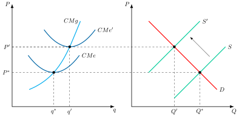
Incremento de los costes variables
Este sería el caso del establecimiento de un impuesto sobre ventas:
Así, un aumento en los costes variables aumenta el coste marginal lo que a su vez desplaza hacia arriba la curva de coste medio, desplazando la curva de oferta agregada hacia arriba, dando lugar a una menor cantidad de mercado y a un mayor precio21.
Sin embargo, no se puede decir nada sobre la cantidad producida por cada empresa y, por lo tanto, tampoco sobre el número de empresas ya que dependerá del desplazamiento de la curva de coste marginal.
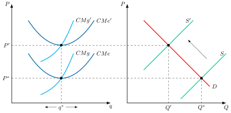
Variaciones en los impuestos
El análisis anterior tiene una aplicación directa en el estudio de los efectos de los impuestos. En el caso de un impuesto unitario sobre la producción este se considera un coste variable en la medida en que depende del nivel de producción. Por ello, se desplaza hacia arriba la curva de coste marginal.
Como se observó anteriormente, esto reducirá la cantidad total producida y aumentará el precio, pero en principio no se podría determinar qué ocurriría con la producción de cada empresa y con el número de empresas. Sin embargo, en el caso de impuestos, este se reparte entre productores y consumidores en función de las elasticidades relativas de la oferta y la demanda. Así, cuanto más elástica sea la oferta y más inelástica la demanda, mayor parte pagarán los consumidores22.
Por ello, como en el largo plazo la curva de oferta del mercado es totalmente elástica, el impuesto se trasladará íntegramente a los consumidores, es decir, íntegramente al precio. Esto hará que la curva de coste marginal se desplace en paralelo hacia arriba en la cuantía del impuesto, por lo que la producción óptima de la empresa individual continuará siendo la misma.
Así, una producción de mercado menor y una producción por empresa constante implican un menor número de empresas.
| Traducción | Efectos | ||||||
| \(CF\) | \(CV\) | \(Q\) | \(P\) | \(n\) | \(q\) | ||
| Aumento de los costes fijos | \(\uparrow\) | \(\downarrow\) | \(\uparrow\) | \(\downarrow\) | \(\uparrow\) | ||
| Aumento de los costes variables | \(\uparrow\) | \(\downarrow\) | \(\uparrow\) | ? | ? | ||
| Impuesto sobre la producción | \(\uparrow\) | \(\downarrow\) | \(\uparrow\) | \(\downarrow\) | = | ||
7.6 Relajación de supuestos 3'
Hasta el momento se ha supuesto que los costes tienen forma de U y que los precios de los factores están dados que junto con el supuesto de información perfecta garantizan las condiciones de existencia, unicidad y estabilidad del equilibrio competitivo. A continuación, se va a replantear el modelo ya que existen casos en los que estos supuestos no se cumplen.
Curvas de costes sin rendimientos mixtos
Si no existen rendimientos mixtos, entonces los costes a largo plazo no tendrán forma de U. Se analizarán los rendimientos constantes, crecientes y decrecientes a escala como se observa en la Figura 7.8.
Rendimientos constantes a escala
Los rendimientos constantes a escala se representan mediante una curva de coste marginal constante, lo que da lugar a una curva de coste medio constante –esto es, a economías constantes a escala– y a una curva de oferta horizontal. Existe un precio tal que la oferta agregada es igual a la demanda agregada con beneficio igual a 0. La cantidad quedará totalmente determinada por la demanda y los mercados se vaciarán.
No será posible determinar la producción de cada empresa ni el número de empresas.
Rendimientos crecientes a escala
Los rendimientos crecientes a escala se representan mediante una curva de coste marginal decreciente, lo que da lugar a una curva de coste medio decreciente –esto es, a economías de escala–.
De esta forma no se cumple la condición de segundo orden del problema de optimización, esto es, que el equilibrio se dé en el tramo creciente del coste marginal. Por lo tanto, la regla competitiva de fijar \(P=CMg\) generará pérdidas, y las empresas saldrán del mercado hasta que quede un solo productor –monopolio natural– que sea capaz de elevar el precio a, al menos, el nivel del coste medio, para no obtener pérdidas.
La solución sería la existencia de un único productor –monopolio natural–, por lo que no habrá competencia.
Rendimientos decrecientes a escala
Los rendimientos decrecientes a escala se representan mediante una curva de coste marginal creciente, lo que da lugar a una curva de coste medio creciente –esto es, a deseconomías de escala–.
Así, el coste marginal siempre estará por encima del coste medio, por lo que la regla competitiva de fijar \(P=CMg\) generará beneficios, y entrarán infinitas empresas al mercado.
Este caso representa una situación poco lógica en la que el equilibrio se produce con un número infinito de empresas y cada una de ellas lanza al mercado una producción infinitesimalmente pequeña.
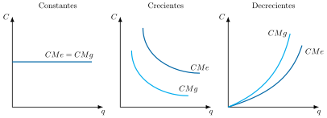
Conclusión
En competencia perfecta los \(CMe_{l/p}\) deben tener forma de U. Si no, los resultados no son consistentes con los supuestos del modelo: la forma de U permite obtener un tamaño óptimo de planta lo que, a su vez, permite calcular el número óptimo de empresas en el mercado (lo que determina cuál es la estructura de mercado adecuada). En la Teoría de la Organización Industrial se ha debatido la cuestión de la forma de los \(CMe_{l/p}\). Quienes no defienden la forma de U son aquellos autores que creen que hay distintas estructuras de mercado óptimas, que todas lo pueden ser.
Economías de escala externas a la empresa pero internas a la industria
Por otro lado, existen economías de escala externas a la empresa pero internas a la industria cuando el coste medio de cada empresa disminuye al aumentar la producción del conjunto de la industria, y no la suya propia. Si el coste medio aumenta, se habla de deseconomías de escala externas.
Las economías de escala externas permiten abandonar el supuesto de costes constantes, es decir, que el precio de los factores productivos es constante –es decir, la oferta agregada de factor productivo es totalmente elástica–. Levantar este supuesto permite obtener una curva de oferta del mercado del bien a largo plazo que no sea horizontal.
Cuasiofertas
Ahora la oferta agregada del bien ya no puede calcularse sumando ofertas individuales independientes, sino sumando las cuasiofertas de las empresas, es decir, lo que cada empresa ofrecería a cada precio dado un nivel de producción de la industria. Según su origen, las economías externas pueden ser:
Pecuniarias: se deben a la interacción que puede existir entre el nivel de producción de la industria y el nivel de precios de los factores productivos (si la oferta de factores no es perfectamente elástica, al aumentar la demanda de ff.pp aumenta su precio).
Tecnológicas: aparecen cuando el rendimiento de una tecnología dada se ve afectado por el nivel de producción de la industria. Explican por qué un grupo de empresas puede ser más eficiente que una sola, y sus fuentes, ya señaladas por Marshall, son:
Aprovechamiento de proveedores especializados que al abastecer a varias empresas pueden especializarse en bienes o factores productivos más específicos, por ejemplo, just in time, aumenta el número de proveedores…
Creación de un mercado laboral especializado: Aumenta la flexibilidad laboral. Si el trabajador pierde su puesto de trabajo tiene otras oportunidades.
Externalidades tecnológicas: Spill-overs, difusión informal de know how, acceso rápido a nuevas tecnologías y difusión de conocimiento.
Deseconomías de escala externas
Ante deseconomías de escala externas la industria es de coste creciente, es decir, el precio de los factores productivos aumenta cuando aumenta la producción agregada. Este caso es frecuente, y puede explicarse porque, por ejemplo, la industria utiliza factores productivos escasos (no ilimitados).
Gráficamente, como se observa en la Figura 7.9, se va a representar en un plano de precios y cantidad producida la oferta y la demanda en el corto plazo, determinando su intersección el equilibrio \(E_{0}\):
En este contexto si la industria presenta costes crecientes un aumento en la demanda desplaza la demanda hacia la derecha, \(D^{\prime}\), el precio aumentará hasta \(P^{\prime}\), produciéndose beneficios extraordinarios que atraerán a nuevas empresas al mercado.
Sin embargo, en este caso los precios de los factores aumentarán cuando su demanda aumente por lo que la curva de costes medios a largo plazo de todas las empresas, tanto instaladas como entrantes, se desplazará hacia arriba así como la curva de costes marginales que también se desplazará hacia arriba, cambiando pues la estructura de costes de la empresa23.
Así, la entrada de nuevas empresas se producirá hasta que el precio coincida con el mínimo del nuevo coste medio (esto es, la curva de oferta agregada se desplazará a la derecha, pero no tanto, por lo que cortará a la demanda a un precio mayor que el inicial), y cada empresa lanzará al mercado una nueva cantidad óptima.
Es decir, de nuevo, en el largo plazo todas las empresas operan en la nueva dimensión óptima \(\left(P=CMg_{lp}=CMe_{lp}\right)\), y vuelven a obtener beneficios nulos.
Esto hará que la curva de oferta agregada a largo plazo tenga pendiente positiva.
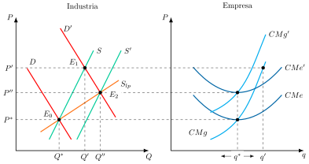
Economías de escala externas
Estamos ante una industria de coste decreciente, en la que el precio de los factores productivos disminuye cuando aumenta la producción agregada.
Este caso es menos frecuente, y podría darse en la práctica por la existencia de un clúster de empresas24 donde se dan economías de aglomeración (especialización del trabajo, menores costes de transporte y de almacenamiento, y externalidades positivas).
Como ejemplos podríamos mencionar Silicon Valley, Hollywood o Wall Street en Estados Unidos o, en el caso español, el clúster de la cerámica de Castellón.
El razonamiento es igual que el anterior, solo que ahora la curva de coste marginal se desplaza hacia abajo, lo que genera una curva de oferta agregada a largo plazo con pendiente negativa.
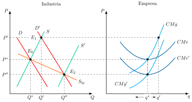
Además, las economías de escala externas se han utilizado frecuentemente como argumento a favor de la protección de la industria naciente: sería deseable proteger la industria nacional para que ésta aumente la producción y, con ella, disminuyan los costes medios de las empresas hasta que sean competitivas internacionalmente.
El modelo de la telaraña
Por último, hasta ahora se ha supuesto que la información es perfecta en el sentido de que consumidores y productores reaccionan simultánea e inmediatamente a los shocks. Sin embargo, en algunos mercados los agentes pueden no conocer de inmediato los nuevos precios –o conocerlos pero no actuar hasta saber si se trata de variaciones transitorias o permanentes en el precio–, por lo que el ajuste puede no ser instantáneo, y los productores pueden necesitar más tiempo para ajustar su capacidad productiva a los nuevos precios –es el caso, por ejemplo, de la agricultura o la construcción–. En estos casos, la oferta no dependerá del precio en curso, sino del precio del período anterior.
Este modelo recibe el nombre de telaraña25 porque conduce a oscilaciones del equilibrio que serán convergentes, divergentes o constantes en función de las elasticidades relativas de la oferta y la demanda.
El supuesto clave de este modelo es que los productores forman expectativas ingenuas sobre el precio: esperan que el precio en \(t\) sea igual al del periodo anterior, \(t-1\). El problema en este modelo es el ajuste ante shocks de demanda, dado que no será instantáneo. Este mecanismo no presenta problema si el mercado ya se encuentra en equilibrio, de tal forma que \[D(p_{t})=s(p^{e}_{t})=s(p^{*}_{t})\]
No obstante, si se produce un shock de demanda, comenzará un proceso de ajuste hasta converger al nuevo precio de equilibrio.
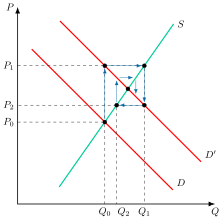
Diferentes casos:
En el caso convergente, los precios tienden al equilibrio en el largo plazo. Gráficamente, en un plano de precios y cantidades, se representa el equilibrio para una oferta y una demanda y un plano adyacente de precios y tiempo un equilibrio inicial \(P_{0}\) en \(t_{0}\), Si se desplaza la demanda hacia la derecha, con esa cantidad ofertada el precio aumenta a \(P_{1}\), y a ese precio la cantidad ofertada aumentará a \(Q_{1}\), pero cuando \(Q_{1}\) sale al mercado el precio baja a \(P_{2}\). Las fluctuaciones de precios se van reduciendo progresivamente y en el largo plazo se acaba alcanzando el equilibrio.
Esto ocurre cuando la oferta es menos elástica que la demanda (es decir, es algo más vertical que la demanda).Si el modelo es divergente entonces los precios se desvían del equilibrio en el largo plazo. El razonamiento sería inverso al anterior y ocurre cuando la oferta es más elástica que la demanda (es decir, es algo más horizontal que la demanda).
Por otro lado, en el caso de oscilaciones constantes los precios oscilan alrededor del equilibrio con una amplitud que no cambia, sin llegar a alcanzarlo. Esto ocurre cuando la oferta es igual de elástica que la demanda.
7.7 Conclusiones 30"
Como conclusión, la competencia perfecta es la estructura de mercado de referencia en términos de eficiencia porque, en ausencia de fallos de mercado, su equilibrio es óptimo en el sentido de Pareto, tal como establece el Primer Teorema de la Economía del Bienestar. Una vez alcanzado el equilibrio competitivo, ningún agente tiene incentivos a modificar su comportamiento, lo que convierte a este modelo en el referente normativo por excelencia dentro del análisis económico.
No obstante, en la práctica, son escasos los mercados que cumplen con los estrictos supuestos de este modelo. A pesar de ello, se considera deseable por sus implicaciones en eficiencia asignativa.
Sin embargo, desde una perspectiva dinámica, presenta limitaciones importantes: al no existir beneficios extraordinarios en el largo plazo, los incentivos a innovar y diferenciarse se ven reducidos, lo que puede frenar el progreso tecnológico y la evolución del mercado.
Esta restricción se supera mediante estructuras de mercado más flexibles, como la competencia monopolística, donde la diferenciación de productos y la posibilidad de obtener beneficios extraordinarios en el corto plazo fomentan la inversión en innovación y creatividad empresarial.
Apéndice
7.A.1. Levantamiento de otros supuestos
Aparte de estos supuestos, la teoría económica se ha interesado en el levantamiento de otros:
Pocos productores. Los modelos de monopolio y oligopolio muestran cómo las empresas pueden tener poder de mercado si no existen muchos productores, lo que conduce a una situación socialmente ineficiente.
Producto heterogéneo. El modelo de competencia monopolística estudia el caso de productos heterogéneos.
Información imperfecta. Los modelos de Economía de la información permiten estudiar los casos en que los compradores o vendedores no disponen de información completa o simétrica.
Presencia de externalidades y de bienes públicos. Los modelos de la Economía del bienestar nos permiten ver cómo varían las conclusiones cuando introducimos externalidades y bienes públicos.
7.A.2. Eficiencia con incertidumbre (Arrow y Hahn, 1971)
De acuerdo con el resultado de Arrow y Debreu, recogido en el manual de Arrow y Hahn (1971), el mecanismo competitivo produce asignaciones eficientes de recursos también en un mundo con incertidumbre, es decir, con información incompleta pero simétrica sobre el estado de la naturaleza, siempre que se cumplan las siguientes condiciones:
Si los agentes se comportan como maximizadores de la utilidad esperada.
Si asignan a cada estado de la naturaleza probabilidades subjetivas e independientes de sus propios actos (no existen comportamientos estratégicos)
Y existe un sistema completo de mercados para cubrirse de todas las posibles contingencias.
La intuición del resultado consiste en redefinir los propios bienes en función del estado de la naturaleza en que se consumen –una manzana hoy y una manzana mañana si llueve son, a efectos del modelo, dos bienes distintos–, lo que permite tratar la incertidumbre dentro del mismo marco de bienes contingentes que sustenta el Primer Teorema del Bienestar. La tercera condición, el sistema completo de mercados, es la más restrictiva: exige que exista un mercado para cada combinación posible de bien y estado de la naturaleza, de forma que los agentes puedan asegurarse frente a cualquier contingencia mediante los llamados títulos contingentes (Arrow 1964). Si ese mercado es incompleto, el resultado deja de garantizarse.
7.A.3. Ventajas de la competencia perfecta
Pese a que ciertamente muy pocos mercados pueden considerarse como perfectamente competitivos debe quedar claro que el análisis del equilibrio (parcial) en competencia perfecta es especialmente útil por:
Ser la base de la teoría de mercados, pues sirve como marco de referencia ante situaciones más realistas en las que existen fallos de mercado –la pérdida de eficiencia asociada al poder de mercado de un monopolio, por ejemplo, se mide precisamente como desviación respecto de este óptimo competitivo–,
Se aproxima a la realidad de algunos mercados, como los de commodities y valores –el trigo, el petróleo o los mercados bursátiles, donde numerosos participantes negocian un producto prácticamente homogéneo–.
Permite introducir argumentos gráficos e inequívocos para la medición de las ganancias de bienestar generadas por el intercambio: al cumplirse exactamente \(P=CMg\) en el equilibrio, el excedente del consumidor y del productor pueden leerse directamente como áreas del gráfico de oferta y demanda, sin necesidad de instrumentos analíticos más sofisticados.
El enfoque de equilibrio parcial permite aislar cualquier fenómeno existente en un mercado de la interrelación con otros mercados, permitiendo una interpretación más clara de los efectos de fallos de mercados, y de las medidas que podrían ayudar a solventarlos.
7.A.4. Controles legales de precios
El equilibrio competitivo desarrollado a lo largo del tema presupone que los precios pueden ajustarse libremente hasta vaciar el mercado. En la práctica, sin embargo, es frecuente que la autoridad económica fije por ley un rango admisible de precios \(\bar{P}\), ya sea mediante un precio mínimo –\(\bar{P}=\{p\geq p_{min}\}\)– o un precio máximo –\(\bar{P}=\{0\leq p\leq p_{max}\}\)–, motivados típicamente por presiones de grupos de interés o por objetivos redistributivos.
Una cantidad y un precio \((\bar{x},\bar{p})\) constituyen un equilibrio con controles de precios si: el precio satisface el control legal, \(\bar{p}\in\bar{P}\); el precio minimiza la diferencia entre oferta y demanda agregadas dentro del rango permitido; y la cantidad de equilibrio es la menor entre la cantidad ofertada y la demandada al precio \(\bar{p}\).
Cuando el control no es vinculante –el precio de equilibrio competitivo ya se encuentra dentro del rango permitido–, el resultado coincide exactamente con el del equilibrio competitivo sin restricciones. Cuando sí es vinculante, el precio de mercado coincide con el propio límite legal: por ejemplo, ante un precio máximo inferior al de equilibrio competitivo, cualquier precio ligeramente inferior al máximo seguiría generando exceso de demanda, y el proceso de puja entre consumidores insatisfechos llevaría el precio hasta el propio límite legal, momento en el que la restricción impide seguir realizando intercambios mutuamente beneficiosos. Dado que el intercambio sigue siendo voluntario, la cantidad finalmente transaccionada es la menor entre la que desean adquirir los consumidores y la que desean ofrecer las empresas al precio controlado; el razonamiento simétrico se aplica a un precio mínimo vinculante, superior al de equilibrio.
Más allá de la pérdida de excedente total respecto del óptimo competitivo, cuando el control de precios es vinculante aparece además un problema de racionamiento: al no ser la cantidad ofertada –con un precio máximo– suficiente para satisfacer toda la demanda potencial, no queda determinado, dentro del propio modelo, cómo se reparte la producción disponible entre los consumidores dispuestos a adquirirla al precio controlado. Esa asignación final depende de detalles institucionales adicionales –colas, racionamiento administrativo, mercados paralelos–, que en la práctica suelen generar pérdidas de bienestar todavía mayores que las derivadas del mero desajuste entre oferta y demanda26.
7.A.5. Relación entre el equilibrio parcial y el equilibrio general
A lo largo de este tema el análisis se ha centrado en el enfoque de equilibrio parcial, que aísla la determinación de precios y cantidades en un único mercado. Conviene precisar, para cerrar el tema, que este enfoque no es una alternativa completamente distinta del equilibrio general walrasiano (Walras 1874), sino un caso particular de este bajo dos supuestos adicionales: la existencia de un bien numerario y preferencias cuasilineales respecto de él.
En un marco de equilibrio general con numerario, la renta inicial de cada consumidor se entiende como su dotación de numerario más su participación en los beneficios de las empresas de las que es propietario. El equilibrio general determina simultáneamente el precio del bien de interés, \(p_{x}\) (el del numerario, \(p_{m}\), está normalizado a 1), el consumo de cada agente de ambos bienes, y la producción del bien no numerario, de modo que cada consumidor maximiza su utilidad sujeto a su restricción presupuestaria completa –incluyendo su participación en los beneficios empresariales–, cada empresa maximiza beneficios, y los mercados de ambos bienes se vacían simultáneamente. Cuando las preferencias son cuasilineales, resolver este sistema completo resulta equivalente a resolver únicamente el problema de equilibrio parcial del mercado del bien \(x\) desarrollado en el cuerpo del tema: la demanda de \(x\) carece de efecto renta, por lo que no depende de la riqueza de los consumidores, y el mercado del numerario se vacía automáticamente por la ley de Walras.
La elección entre uno u otro enfoque no es, por tanto, una cuestión de rigor –ambos son formalmente correctos bajo sus respectivos supuestos–, sino de conveniencia analítica según el fenómeno que se quiera estudiar. El equilibrio parcial resulta preferible cuando el mercado analizado representa una proporción reducida del gasto total de los consumidores y sus conexiones con el resto de la economía son débiles –por ejemplo, en el análisis de medidas antimonopolio en un sector concreto–. El equilibrio general resulta necesario, en cambio, cuando los efectos de la política analizada se transmiten con fuerza a otros mercados –por ejemplo, los efectos de una política impositiva sobre el mercado de trabajo, con repercusiones directas sobre el mercado de la vivienda–.
La justificación habitual del equilibrio parcial –que el mercado analizado es “pequeño” respecto del resto de la economía– no es, sin embargo, la única posible. Existe una justificación alternativa, de naturaleza puramente tecnológica y válida con independencia del tamaño relativo del mercado: el teorema de no sustitución. Si el numerario es el único factor primario –no producido– de la economía, si el resto de bienes producidos distintos del bien \(x\) se obtienen con rendimientos constantes a escala a partir del numerario y de otros bienes producidos, y si no existe producción conjunta, entonces los precios del resto de bienes de la economía permanecen constantes con independencia de lo que ocurra en el mercado de \(x\) –no por ser este pequeño, sino porque la propia estructura tecnológica de la economía impide que las perturbaciones en \(x\) se transmitan a los precios relativos de los demás bienes–27.
7.A.6. Formalización de la eficiencia: el excedente total como problema de maximización
La eficiencia del equilibrio competitivo demostrada gráficamente en el cuerpo del tema admite una formalización analítica equivalente. La asignación óptima de consumo y producción se obtiene resolviendo el problema de maximización del excedente total,
\[\max_{x}\int^{x}_{0}P(s)\,ds-C(x)\] cuya condición de primer orden es \(P(x^{*})=C'(x^{*})\) –exactamente la condición que caracteriza al equilibrio competitivo (\(P=CMg\))–. Esto confirma, por vía analítica, que el equilibrio de mercado y el óptimo social coinciden: el precio de demanda inversa actúa como el beneficio marginal social de cada unidad adicional, y el coste marginal como su coste marginal social, de modo que igualarlos maximiza el excedente conjunto de consumidores y productores.
7.A.7. Una generalización: mercados disputables y algoritmos de precios
El desarrollo posterior de la teoría de los mercados disputables (Baumol 1982) ha reforzado el interés por los resultados del modelo de competencia perfecta, al mostrar que no es necesario que se cumplan literalmente todos sus supuestos –en particular, la existencia de un número elevado de empresas– para que los beneficios de una industria se mantengan en el nivel competitivo. Lo relevante no es la competencia efectiva, sino la competencia potencial: la amenaza de que nuevas empresas puedan entrar rápidamente y sin costes hundidos disciplina el comportamiento de las empresas ya instaladas, aunque estas sean pocas.
Esta generalización mantiene vigencia incluso en la economía digital de plataformas y los algoritmos dinámicos de fijación de precios: si los consumidores tienen acceso a información perfecta sobre precios, las empresas deben fijar el precio competitivo para poder vender. Sin embargo, esos mismos algoritmos también tienen capacidad de incrementar el grado de colusión tácita entre empresas y de discriminar perfectamente el precio pagado por cada consumidor (Ezrachi y Stucke 2016), lo que podría acabar constituyendo, en sí mismo, una nueva barrera de entrada a la industria.
Términos del glosario de este tema
28 términos · ver el glosario completo
Bibliografía
En economía, un efecto de red (también llamado externalidad de red o economías de escala del lado de la demanda) es el fenómeno por el cual el valor o la utilidad que un usuario obtiene de un bien o servicio depende del número de usuarios de productos compatibles. Los efectos de red suelen ser sistemas de retroalimentación positiva, por lo que los usuarios obtienen cada vez más valor de un producto a medida que más usuarios se unen a la misma red.↩︎
Equilibrio parcial: i) El mercado de un bien constituye una pequeña parte de toda la economía, ii) la oferta y demanda de cada bien depende solo del precio del propio bien. Los efectos renta y sustitución cruzados con los demás mercados son despreciables. El gasto en los otros bienes se puede tratar como uno solo, el numerario. La manera más simple de modelar estos supuestos es asumir que en la economía existen dos bienes, y el gasto en todas las mercancías distintas a la que resulta de interés se trata como una única mercancía compuesta (numerario) y las preferencias de los consumidores son cuasilineales respecto al numerario.
El enfoque de equilibrio parcial también es válido para estudiar mercados con varios productos muy similares, como es el caso de los modelos de diferenciación de producto y competencia monopolística.↩︎
De los supuestos de producto homogéneo e información perfecta se deriva la Ley de Precio único. La ley del precio único en economía afirma que, en ausencia de barreras comerciales y en una economía con precios que pueden variar libremente en función de la demanda y la oferta (modelo elástico), si se comparan los precios de un mismo bien de dos países diferentes en términos de una misma moneda, entonces esos precios, en equilibrio, tendrán que ser iguales.↩︎
En el corto plazo puede haber empresas con diferente tecnología, sin embargo en el largo plazo será igual para todas y serán aquellas que sobrevivan en el mercado.↩︎
Es decir, estamos suponiendo que la curva de oferta agregada del factor productivo es totalmente elástica. Se podría decir que estamos asumiendo economías de escala externas constantes: los costes de la empresa no varían cuando aumenta la producción de la industria (es decir, los precios de los factores productivos no aumentan cuando la industria, para aumentar su producción, demanda más factores productivos).
Nótese que este supuesto de “costes constantes” no quiere decir “costes marginales constantes”. Lo que estamos suponiendo con el supuesto es que el precio de los factores productivos se mantiene constante, pero el coste marginal está compuesto por algo más que el precio de los factores: también está afectado por la productividad marginal del factor: \[CMg=\dfrac{\bar{W}_{i}}{PMg_{x_{i}}}\] y si hubiese dos factores productivos (digamos, trabajo y capital), entonces el coste marginal sería: \[CMg=\dfrac{W}{PMg_{L}}+\dfrac{R}{PMg_{K}}\]↩︎
El bien numerario es el bien cuyo precio se normaliza a 1 para expresar en sus unidades los precios de todos los demás. En el modelo de equilibrio parcial representa el gasto agregado en todos los bienes distintos del analizado.↩︎
La eficiencia en la distribución del consumo del bien está asegurada por el hecho de que el beneficio marginal del consumo del bien no numerario es igual para todos los consumidores.↩︎
La agregación horizontal de las ofertas individuales solo es un método válido si asumimos que, al aumentar la producción, los precios de los factores productivos que emplean las empresas no varían (es decir, si suponemos que la oferta de factores es totalmente elástica). Si estos precios aumentaran, no solo lo harían para la última unidad sino para todas las unidades, desplazando la curva de oferta hacia la izquierda e imposibilitando la agregación.
Además el coste de ajuste de todos los factores es infinito, es decir, no se puede variar el nivel de producción que se oferta al mercado variando la cantidad empleada de los factores.↩︎
Sí que podría vender a un precio inferior, pero no le interesará porque, como se detallará más adelante, estaría vendiendo por debajo de los costes, lo que le reportaría pérdidas.↩︎
La oferta de mercado es de nuevo la suma horizontal de las ofertas a c/p de las empresas del mercado: es la suma de las cantidades ofrecidas por cada empresario para cada precio, para lo cual es necesario que la oferta de factores sea totalmente elástica (si aumenta la demanda de un determinado factor no varía su precio). Tiene pendiente positiva. Si varían los precios de los factores o la tecnología, se desplaza la curva de oferta a una nueva posición.↩︎
Dadas las interpretaciones previas de la curva inversa de demanda agregada, así como de la curva inversa de oferta agregada, el equilibrio parcial competitivo puede ser interpretado como aquel nivel de producción donde el beneficio marginal social del bien \(l\) es igual a su coste marginal.↩︎
Nótese que cuando hablamos de beneficios nulos, nos referimos a los beneficios económicos, no solo a los contables. Los beneficios económicos se obtienen restando a los beneficios contables el coste de oportunidad, es decir, restándoles la cantidad que la empresa deja de ganar por dedicar los medios a la producción de dicho bien y no a la mejor alternativa. De ahí que una empresa pueda tener beneficios contables positivos pero beneficios económicos nulos.↩︎
Esto es relevante porque, como veíamos, en competencia perfecta el tramo creciente de la curva de coste marginal a partir del mínimo de explotación es precisamente la curva de oferta. El fenómeno de la mayor rigidez es una consecuencia de la dotación fija de algún factor productivo en el corto plazo, y es precisamente lo que explica el Teorema de Le Châtelier-Samuelson: las funciones de oferta de la empresa precio-aceptante en el corto plazo son más rígidas que en el largo plazo (y tanto más rígidas cuanto mayor sea el número de factores considerados fijos) debido a que la capacidad de adaptación de la empresa en el corto plazo es menor al tener algunas dotaciones fijas.↩︎
El Segundo teorema del bienestar completa este resultado: cualquier asignación óptima de Pareto puede alcanzarse como equilibrio competitivo mediante una redistribución previa de la renta entre los agentes, lo que permite separar los objetivos de eficiencia y de equidad. Su desarrollo completo corresponde al tema de Economía del bienestar.↩︎
La intuición es que, si la última pizza producida vale para quien la come 12 euros y cuesta 8 producirla, conviene producir otra, y si vale 6 y cuesta 8, sobra. Solo cuando ambas cifras coinciden la cantidad es la adecuada.↩︎
El EC es una medida monetaria de la ganancia de utilidad del consumidor, pero solo coincide exactamente con la variación compensatoria y la variación equivalente –las medidas rigurosas del cambio de bienestar– cuando no hay efecto renta sobre el bien, es decir, bajo preferencias cuasilineales (ver Apéndice, 7.A.5). Sin ese supuesto, el EC es solo una aproximación.↩︎
La intuición es que, si a un agricultor le cuesta 0,60 euros producir un kilo de naranjas y el mercado se lo paga a 1 euro, su excedente en ese kilo es de 0,40 euros. El EP no debe confundirse con el beneficio: \(EP=IT-CVT\), mientras que el beneficio es \(\pi=IT-CT=EP-CF\). Ambos coinciden únicamente si no hay costes fijos, lo que ocurre siempre en el largo plazo.↩︎
La intuición es la de una subasta: si a un precio dado faltan unidades, los compradores pujan al alza, y si sobran, los vendedores rebajan el precio para colocarlas.↩︎
La intuición es que, si los compradores están dispuestos a pagar por la última unidad más de lo que les cuesta producirla a los vendedores, a estos les compensa producir más, y esa expansión continúa hasta que ambos precios coinciden.↩︎
Nótese que la curva de oferta agregada, S, no la dibujamos horizontal al estar en el corto plazo (pues estamos hablando de costes fijos).↩︎
En el corto plazo, se desplaza hacia arriba el \(CVMe\) por lo que habrá empresas que cesen su actividad.↩︎
Además del reparto de la carga entre oferta y demanda, el impuesto reduce el excedente total respecto del equilibrio sin distorsionar: esta pérdida irrecuperable de eficiencia se representa gráficamente como el triángulo de Harberger, el área comprendida entre las curvas de oferta y demanda entre la cantidad transaccionada con y sin impuesto.↩︎
Nótese que la nueva dimensión óptima de la empresa puede ser menor, igual o mayor que la anterior, en función de cómo se desplace hacia arriba la curva de coste marginal.↩︎
Un clúster empresarial es una concentración geográfica de compañías, organizaciones e instituciones relacionadas en un campo en particular que puede estar presente en una región, estado o nación.↩︎
El término “telaraña” (cobweb) fue acuñado por Kaldor (1934) y popularizado por Ezekiel (1938), quien lo formalizó a partir de los trabajos independientes de Ricci, Tinbergen y Schultz en torno a 1930.↩︎
El control de alquileres en numerosas ciudades europeas es el ejemplo de manual más citado de precio máximo vinculante con racionamiento no resuelto por el propio mecanismo de mercado.↩︎
El resultado fue descubierto de forma independiente por Samuelson y Georgescu-Roegen en 1949 y publicado por ambos en 1951 en el mismo volumen editado por Koopmans, en el contexto de la teoría de Leontief de insumo-producto: Samuelson demostró el caso de dos bienes, Koopmans el de tres, y la generalización al caso de \(N\) bienes se debe a Arrow (Arrow 1951).↩︎